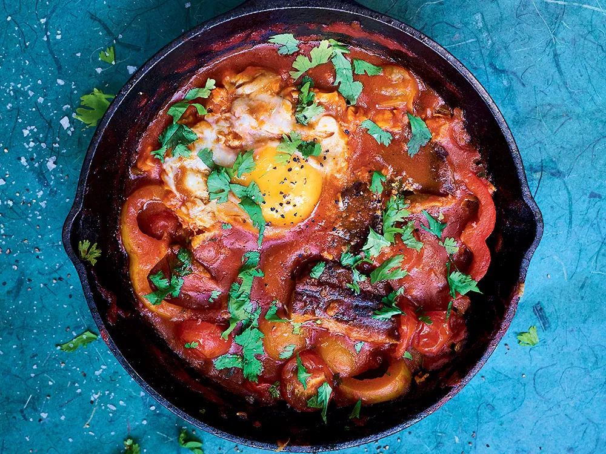

Tinned Fish Shakshuka

Spin on a classic North African and Middle Eastern dish. This recipe adds tinned sardines and miso to an a simple and healthy classic.
Ingredients
Serves 2
- 2 tbsp olive Oil
- 4 cloves garlic, minced
- 1 small shallot, minced
- 14.5 oz can crushed tomatoes
- Salt
- 1 can of tinned sardines
- 4 eggs
- 4 tsp parsley
- Crusty Bread
Steps
- Heat olive oil in medium saute pan or small dutch oven
- Fry garlic and shallots over medium low heat for about 3 mins or until soft
- Pour in tomatoes and bring to a simmer. Lightly salt. Cover with lid for ~12 min or until slightly reduced.
- Toast bread while dish is cooking and keep warm.
- Pour in drained tin fish. Break up into bite size pieces.
- Make 4 indents in the sauce for eggs. Crack eggs into slots and cover with lid. Cook for ~3 min or until whites set.
- Garnish with chopped parsley
- Enjoy
Home